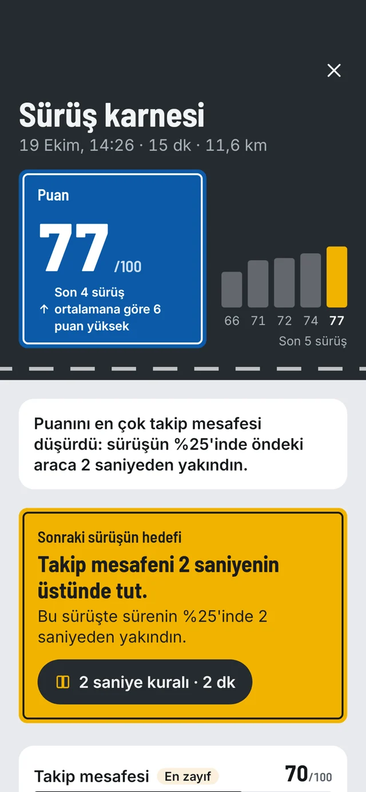

Ehliyeti yeni olanlar
Yalnız sürmek zorunda değilsin. Önünde yaya ya da bisikletli olunca, öndeki araca fazla yaklaşınca kısa bir sesle haber verir.
Yakında · Android · Erken erişim
Steady Drive'ı ön cama takarsın. Yolu izler, öndeki araca ya da yayaya fazla yaklaşınca tek cümleyle uyarır. Sürüş bitince puanlı karnen hazır.
Henüz yayında değil. İlk sürüm Android 11 ve üstü için; iPhone sürümü yok.
Nasıl çalışır

Telefon tutucusuyla ön cama tak ve "Sürüşe başla"ya bas. Ek cihaz ya da hesap gerekmez.

Arka kamera ve GPS yolu izler. Yalnızca riskli anda kısa bir ses ya da tek cümleyle konuşur.
100 üzerinden puanın, olayların ve bir sonraki sürüş için tek hedefin seni bekler.
Ne zaman konuşur
Uygulamadaki gerçek cümleler bunlar. Gerisinde sessiz kalır.
Öndeki araca çarpma riski oluştuğunda.
Öndeki araçla aranı saniye cinsinden ölçer; kısaldığında söyler.
Yavaş giderken önünde yakın bir yaya olduğunda.
Yavaş giderken önünde yakın bir bisikletli olduğunda.
Türkiye'de harita verisi olan yollarda hızını sınırla karşılaştırır.
Sert fren, sert kalkış ve hızlı viraj telefonun sensörlerinden izlenir.

Sürüşten sonra
Kimin için
Yalnız sürmek zorunda değilsin. Önünde yaya ya da bisikletli olunca, öndeki araca fazla yaklaşınca kısa bir sesle haber verir.
Her sürüşten sonra puanını ve gelişecek tek bir alanı görürsün; 2 dakikalık derslerle kuralları pekiştirirsin.
Çocuğunuz uygulamayı kendi telefonunda kullanır. Veriler onun telefonunda kalır; karnesini yalnızca o isterse sizinle paylaşır.
Bilmen gerekenler
Planlanan fiyatlar
Henüz satışta değil. Aşağıdaki tutarlar planlanan fiyattır ve değişebilir; şimdi ödeme istemiyoruz.
0
Planlanan fiyat
99/ ay
Planlanan fiyat
4496 ay, tek ödeme
Sorular
Uygulama çalışıyor, mağazada yayınlanmayı bekliyor. E-posta bırakırsan çıktığı gün haber veririz.
Hayır. İlk sürüm yalnızca Android 11 ve üstü için.
Hayır. Yalnızca telefonun ve onu ön cama sabitleyecek bir tutucu yeterli. Hesap açmazsın.
Hayır. Veriler telefonda kalır; görüntü telefondan çıkmaz, sunucuya hiçbir şey gitmez.
Hayır, böyle bir söz vermiyoruz. Uyarılar yardımcıdır; yol ve karar sürücünündür. Gece ve kötü havada kamera sınırlıdır.
İlk 3 sürüşte tam koçluk ücretsiz. Çarpışma riski uyarısı ücretsiz planda da her zaman açık.
Hayır. Türkiye'de harita verisi olan yollarda gösterir; her yolda sınır bilinmez.
Çıktığında ilk haber alanlardan ol.